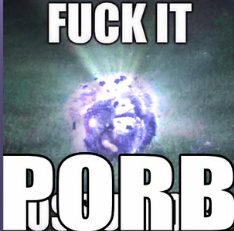

Welcome to thegangfightsgod.xyz
The current patch is 7.1
this site uses JavaScript cookies for the dark-mode. Please click here to swap modes.
"Where do I get/unlock/whatever..."
- This will be updated in the future
Gear planner?
Its here. Not mine, obviously.
follow the readme and use common sense. i like this spreadsheet.
Normal Raid Loot Explained
You get one piece of gear per raid per week (for the current tier). The current tier is Pandaemonium Anabaseios.
various pieces of gear require various amounts of loot
- Head Gear
- you need 2 pieces of head loot
- Chest Gear
- you need 4 pieces of chest loot (one week's worth of loot)
- Arm Gear
- you need 2 pieces of arm loot
- Leg Gear
- you need 4 pieces of leg loot
- Boot Gear
- you need 2 pieces of boot loot
- all accessories
- it is 1:1.
one ring = one jewelry
contra's guide to plugins
Let's be honest.
A lot of people use plugins. But what is a plugin? How do you use them?
Simple!
The FFXIV Quick Launcher! Give this a download, then come back here.
...
Did you download it?
Good!
Use it to log in, and it'll do some fun stuff.
Once you're in game on a character you like, go ahead and type
/xlplugins
into the chatbox!
...
This will bring up the plugin manager!
You need these plugins if you'd like to do modding of any sort. Go into your plugin menu, click settings, click experimental, scroll down. Paste one of these per line.
https://raw.githubusercontent.com/LeonBlade/DalamudPlugins/main/repo.json
https://raw.githubusercontent.com/xivdev/Penumbra/master/repo.json
https://raw.githubusercontent.com/Ottermandias/Glamourer/main/repo.json
https://raw.githubusercontent.com/Penumbra-Sync/repo/main/plogonmaster.json
https://raw.githubusercontent.com/UnknownX7/DalamudPluginRepo/master/pluginmaster.json
https://raw.githubusercontent.com/XIV-Tools/DalamudPlugins/main/repo.json
https://raw.githubusercontent.com/chirpxiv/PalettePlus/main/repo.json
https://raw.githubusercontent.com/ktisis-tools/Ktisis/main/repo.json
https://raw.githubusercontent.com/Ottermandias/SeaOfStars/main/repo.json
https://raw.githubusercontent.com/Aether-Tools/DalamudPlugins/main/repo.json
===
More content to be added in the future!
===